AI Academy · Level 2 · Grade 7 · Week 21 · Student lesson
Similarity by Selected Traits
Learn to understand, design, build, test and explain AI systems responsibly.
Project: Transparent Book Recommender
Before you start
Week 9: selected features determine what similarity means.
Plan time to read, investigate and explain. Keep predictions separate from observations.
Student lesson · 1 of 18
Your mission
Start with the target: Represent items with numeric features. Try the recall before opening notes.
Your learning target
I can represent items with numeric features.
I can calculate a simple distance.
I can explain how units and chosen features affect similarity.
Remember before reading
Close your notes first. A rough first answer helps us choose the right starting point; it is not a score for your ability.
Without opening the old lesson, explain one key idea from Repair Bias in Data. Give an example and a mistake that the idea helps you avoid.
Without opening the old lesson, explain one key idea from Missing Data. Give an example and a mistake that the idea helps you avoid.
Without opening the old lesson, explain one key idea from Choose Informative Questions. Give an example and a mistake that the idea helps you avoid.
After trying, check the relevant lesson or ask your teacher. Change the part of your explanation that the evidence shows was wrong.
Week 21: Similarity by Selected Traits
Different feature choices produce different notions of closeness.
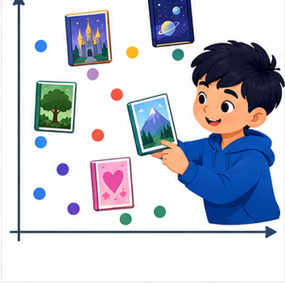
THINKER MISSION
Compute simple distance on genre, length, and difficulty.
Thinker name and date:
Readiness for the connected explanation
What does abs(3 - 7) measure? If unfamiliar, calculate the positive gap.
This week’s end goal
By the end, I can calculate a feature distance and state how scaling changes its meaning.
Student lesson · 2 of 18
Notice the evidence
Investigate the supplied Similarity by Selected Traits case. Separate observations, given facts and assumptions before choosing an explanation.
PICTURE STORY
Notice → Predict → Explain
Begin with visible evidence. Do not explain more than the picture and information support.
Start with this puzzle
MYSTERY
The learners must use similarity by selected traits to solve a problem. What information do they have? What decision or calculation do they make? What would count as evidence that it worked?
Three observations (what you can point to):
My prediction and the clue supporting it:
A closer explanation
A fictional activity chooser represents each activity with energy and group-work ratings on a 0 to 5 scale. A learner requests [2, 4]. We compare options by adding absolute differences.
This is a chosen rule for similarity; it is not a learned model or an objective measure of quality.
Student lesson · 3 of 18
See how it works
Follow the mechanism for Similarity by Selected Traits. Connect each labelled input, deciding step and result.
VISUAL MECHANISM
Input → Process → Output
Trace the information. At each stage, ask what changed and how you could test it.
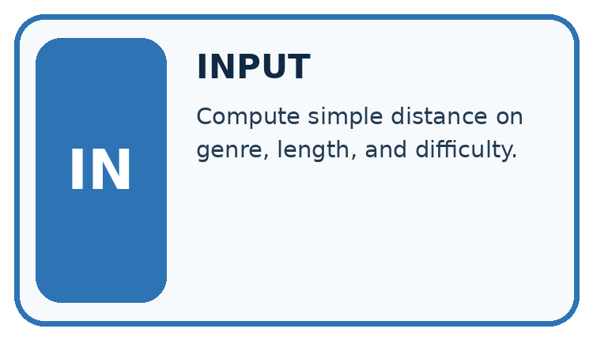
↓
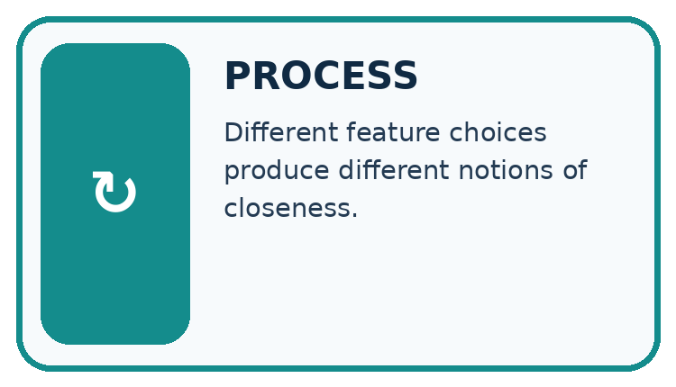
↓
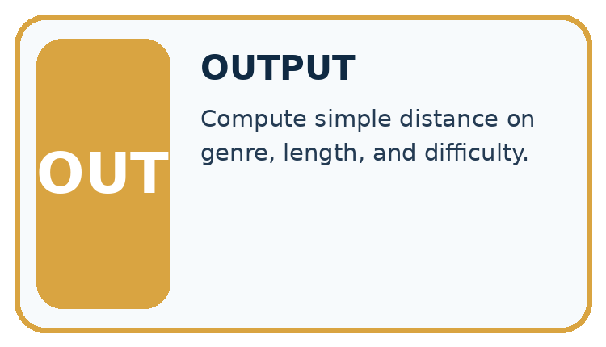
Which stage could fail even when the other two are correct? Explain:
A closer explanation
target = [2, 4]
options = {"Sketch": [1, 3], "Relay": [5, 4]}
for name in options:
features = options[name]
distance = (abs(features[0] - target[0])
+ abs(features[1] - target[1]))
print(name, distance)Follow the evidence
abs gives a nonnegative gap. Under this rule Sketch is closer. Feature order must match: first energy, then group work. Both scales are 0 to 5, but that does not prove one unit has identical practical meaning in both features.
Calculate a gap one feature at a time
Keep the features in the same order: energy first, group work second. For target [2,4] and Sketch [1,3], the gaps are abs(1-2)=1 and abs(3-4)=1; the distance is 2. Relay [5,4] has gaps 3 and 0, so its distance is 3.
Smaller means closer under this particular rule. It does not mean better in every way, because the two recorded features leave out other needs.
Connect the picture and the explanation
Point to the input, the deciding step and the result in this week’s visual. Explain the same step in ordinary words. A picture helps when you can say what each part represents.
Student lesson · 4 of 18
Compare the cases
Compare the supplied cases for Similarity by Selected Traits. Identify the detail that changes the conclusion.
The case to investigate
CASE GALLERY
Four Tests, Four Kinds of Evidence
A system is not understood until it survives more than one comfortable example.


The normal case
NORMAL CASE: predict and name evidence. BOUNDARY CASE: predict and name evidence.


Check missing information
MISSING INFORMATION: predict and name evidence. TRANSFER CASE: predict and name evidence.
Which case is most likely to reveal a hidden assumption? Why?
Change one thing in the pictured case
Change one thing
Change: Give the first-coordinate difference weight 2 while the second keeps weight 1.
Predicted result
Prediction: Distances become A=3, B=4, C=3; A and C tie.
Why the result follows
Reason: The representation’s comparison rule changes; the supplied vectors stay the same.
Student lesson · 5 of 18
Words that unlock the idea
Use the vocabulary of Similarity by Selected Traits to explain a concrete decision, rather than only memorising definitions.
VOCABULARY LAB
Words You Can Use to Reason
A definition matters when you can recognize the idea, use it, and contrast it with a near-miss.
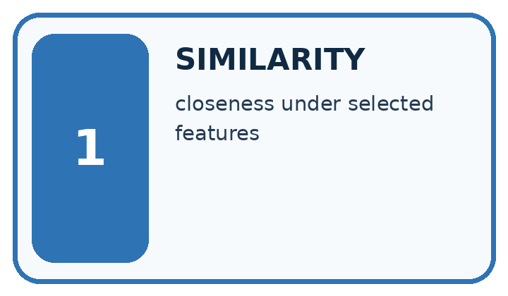
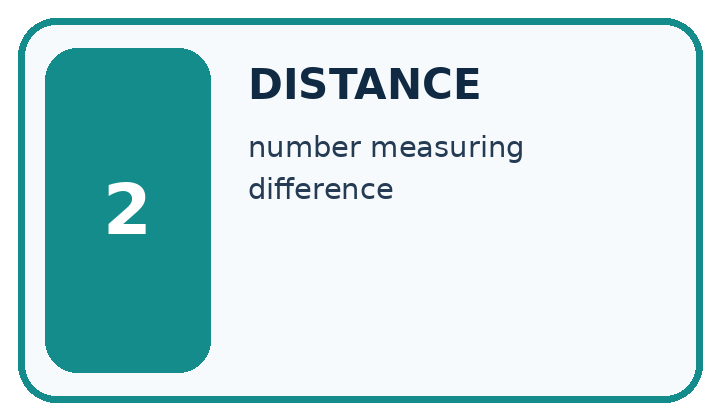
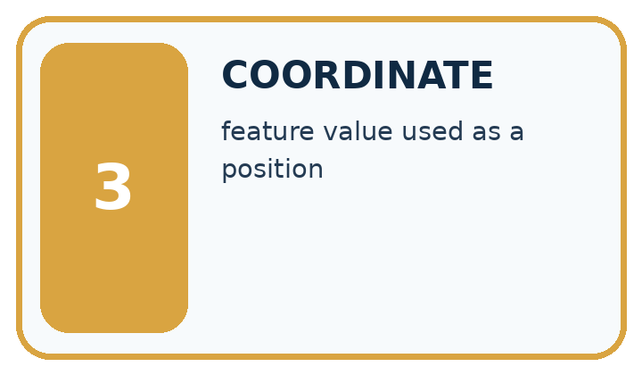
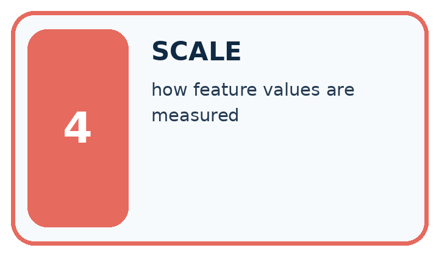
| Word | My own example | Not this / boundary |
|---|---|---|
| similarity | How alike two items are according to selected features and a declared comparison method. | |
| distance | A specified measure of how far apart two representations are. | |
| coordinate | A value identifying position along an agreed axis or within a space. | |
| scale | The units and range used to represent or compare a quantity. |
Words used in the closer explanation
| Word | Meaning |
|---|---|
| Feature vector | An ordered list of numeric features |
| Manhattan distance | The sum of absolute feature differences |
| Normalization | Rescaling features to a comparable scale |
Student lesson · 6 of 18
Follow a worked example
Follow the worked trace for Similarity by Selected Traits, predict a step, then compare with its explanation.
WORKED EVIDENCE
Reason Step by Step
Predict first. Then check each step. A correct answer without visible reasoning is incomplete evidence.
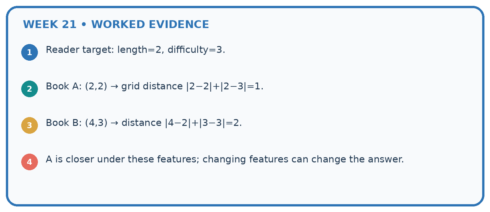
1. Reader target: length=2, difficulty=3.
2. Book A: (2,2) → grid distance |2−2|+|2−3|=1.
3. Book B: (4,3) → distance |4−2|+|3−3|=2.
4. A is closer under these features; changing features can change the answer.
Recalculate, retrace, or restate the reasoning in your own representation:
CHECK Did the evidence answer the exact question? Did the total, path, or source record stay consistent?
A closer explanation
Learn from the worked case
Cover the result before checking it. Say what is given, choose the procedure, and follow one step at a time. Then uncover the result and explain your first mismatch. Ask why a step is allowed, not only what number it produces.
A pictorial worked case: Similarity by Selected Traits
A fictional toy book matcher represents two preferences with numeric features.
The facts we will use
Supplied facts
Target vector [2,5]. Candidate A=[2,2], B=[4,5], C=[3,4].
Supplied facts
Use Manhattan distance: add absolute coordinate differences; return all smallest-distance candidates.
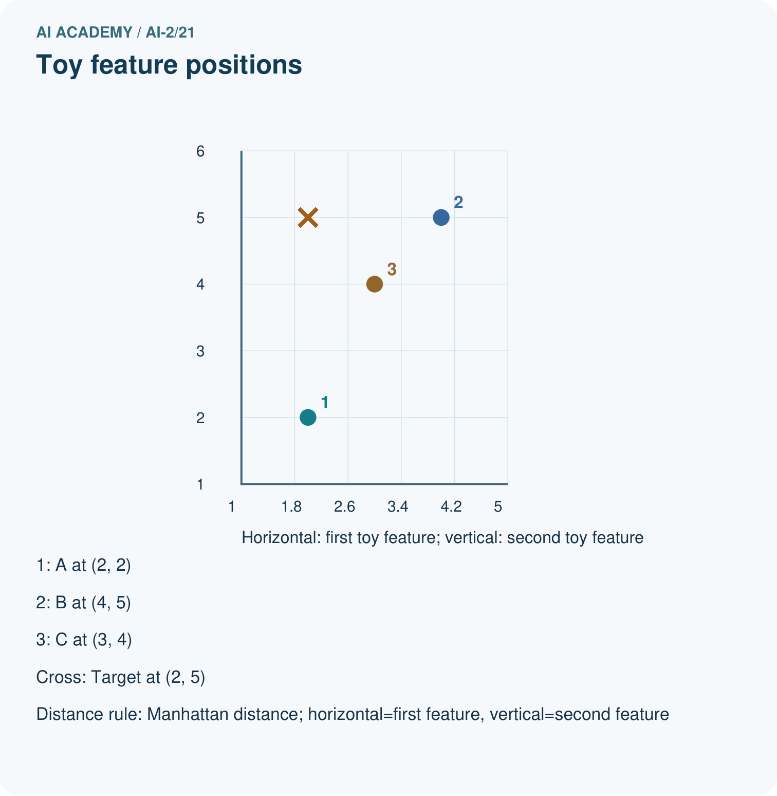
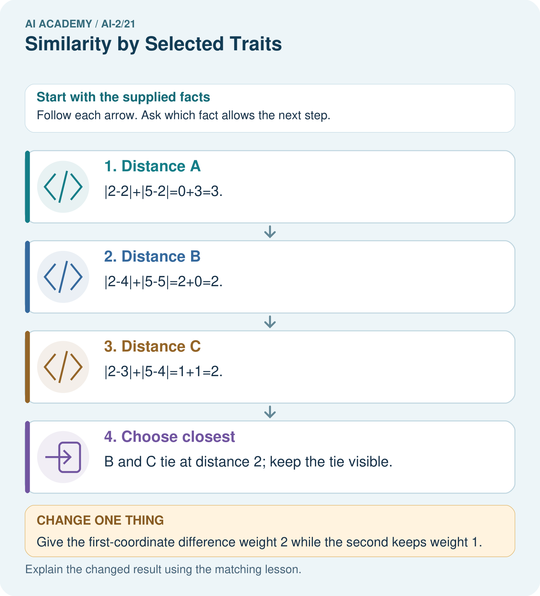
Read the picture one step at a time
Why this result follows
Why the result follows
Each coordinate contributes according to the declared distance rule. Smaller distance means closer in this representation, not automatically a better reading experience.
If one coordinate uses a much larger numerical scale, it can dominate the sum even when it is not more important. Feature units and scaling belong in the method record.
What this example does not establish
Keep the stated limit
A toy numeric encoding does not establish meaningful interpersonal distances or suitability of a recommendation.
Keep the stated limit
Read the labelled picture: Explain why B ceases to be a closest option without any candidate data changing.
Keep the stated limit
Change one thing: Give the first-coordinate difference weight 2 while the second keeps weight 1. Predict the result before checking the explanation. What remains the same?
Student lesson · 7 of 18
Find and repair a mistake
Find the unsupported step in the Similarity by Selected Traits claim and explain a repair using the supplied evidence.
Find the first error
ERROR DETECTIVE
Compare → Diagnose → Repair
Do not patch the answer. Find the earliest unsupported assumption, wrong step, or weak evidence.
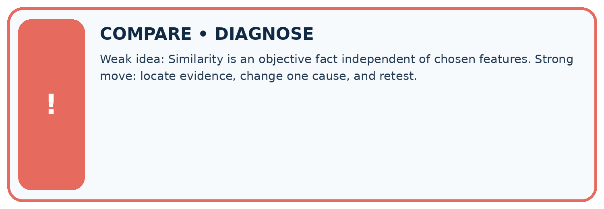
| Evidence record | Expected | Actual | Likely cause / next test |
|---|---|---|---|
| normal case | works | ||
| boundary case | stated rule | ||
| missing input | safe response | ||
| fresh transfer | generalizes |
Repair one cause. Why is this repair better than changing several things?
A closer explanation
Similarity depends on the features collected and the distance rule. Missing accessibility, cost or preference information can make the closest item unsuitable. Hard requirements should be checked separately.
Student lesson · 8 of 18
Practise together
Practise Similarity by Selected Traits with support, then explain the deciding step in your own words.
LOGIC STUDIO
Trace Before You Run
Block code, pseudocode, tables, and diagrams are different ways to expose the same reasoning.

SET evidence_record PREDICT expected_result RUN one normal case and one boundary case COMPARE actual_result with expected_result IF different: locate first cause; change one factor; RETEST EXPLAIN result, limitation, and next safe step
Trace one input. Which line changes the state or chooses a path?
A closer explanation
If one feature is duration in minutes up to 60 and another a rating up to 5, raw distance may be dominated by duration. Specify scaling or weights before ranking; do not silently change units to get a preferred winner.
Practise with less help: Compute distances
Use workbook W2 for the connected example “Distance between feature vectors”. First fill the input and rule boxes. Try the middle steps before asking for a hint. After a hint, try the next step yourself.
| Plan | Do | Check |
|---|---|---|
| What is given? Which rule or procedure applies? | Record each intermediate step. | Does the result follow? What remains unknown? |
Explain your trace to a partner. Your partner points to one step to check. Swap roles on the next case. Each person writes their own explanation.
Check your reasoning
Use the worked case for Distance between feature vectors. Proposed explanation: “A successful run proves the conclusion”. Decide whether this explanation is supported.
Point to the step or supplied fact that decides; explain your repair if needed.
Answer on your own before discussion. If you are unsure, say which step you need help with.
Explain the picture
Explain why B ceases to be a closest option without any candidate data changing.
This is supported practice. Keep the separately named independent case for an attempt before feedback.
Student lesson · 9 of 18
Run the investigation
Investigate Similarity by Selected Traits. Record the prediction, actual observation or labelled paper trace, explanation and next test separately.
EVIDENCE LAB
Predict → Test → Record → Explain
Keep expected and actual results separate. Surprises are useful data when recorded honestly.
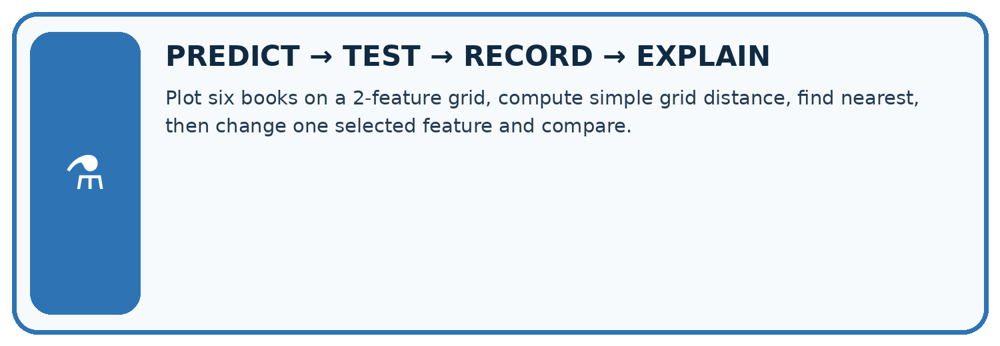
Plot six books on a 2-feature grid, compute simple grid distance, find nearest, then change one selected feature and compare.
| Test / input | Prediction | Actual | Evidence / calculation | Change or keep? |
|---|---|---|---|---|
| normal | ||||
| boundary | ||||
| missing | ||||
| fresh transfer |
What did the hardest test teach you that the normal test did not?
Plan → try → check
Before trying: what do I expect, and why? While trying: which step could first go wrong? Afterwards: what did I actually observe, and what should change? Keep “not run” if you only traced the procedure.
Student lesson · 10 of 18
Build your understanding
Move from recall to tracing, diagnosis and transfer in Similarity by Selected Traits. Explain why each step is justified.
MASTERY
From Knowing the Word to Owning the Idea
Move upward only when you can produce evidence without copying the worked example.

1 • NAME: Define the concept without repeating the textbook.
2 • TRACE: Show the information, state, branch, calculation, or evidence path.
3 • APPLY: Solve a different example independently.
4 • CHALLENGE: Find a boundary case, counterexample, or unfair outcome.
5 • EXPLAIN LIMITS: Say when the result should not be trusted or used alone.
My strongest evidence of independent understanding:
Student lesson · 11 of 18
Connect your project
Apply this week’s idea to Transparent Book Recommender. Keep an annotated decision and the evidence supporting it.
CUMULATIVE PROJECT
Transparent Book Recommender
Every week adds one inspectable piece. The system must show how it reached a result.
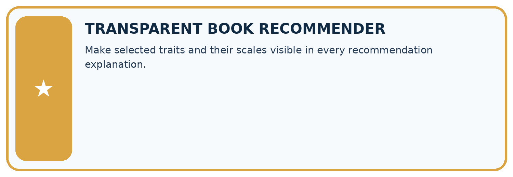
THIS WEEK’S CHECKPOINT Make selected traits and their scales visible in every recommendation explanation.
Trace the system
SYSTEM MAP Reader need → allowed inputs → transparent rule or score → ranked candidates → explanation → test record → human decision
What will you add, change, or verify in the project this week?
What should remain under human control?
Responsible design
RESPONSIBLE DESIGN Collect only necessary information. Show uncertainty and limits. Never confuse a ranking with a fact about a person.
Evidence for your project
Specify recommender feature meanings, units, scaling and tie policy before explaining nearest matches.
Student lesson · 12 of 18
Show what you know
Use a genuinely new case for independent evidence. Previously discussed examples remain practice; use the separately named independent case before feedback.
Independent evidence
INDEPENDENT MASTERY PROOF
Explain • Transfer • Test • Defend
Complete this page without copying the worked example. Your reasoning matters more than decoration.
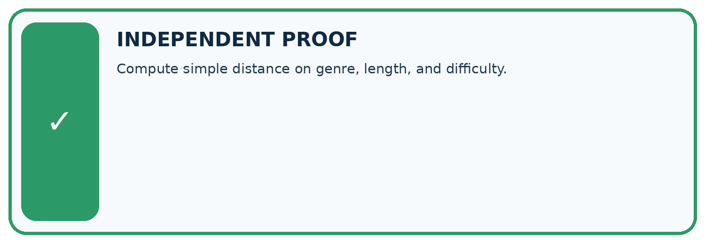
Try a more demanding case
CHALLENGE Compute simple distance on genre, length, and difficulty.
1. My fresh example, trace, calculation, or design:
2. My evidence that it works (include a boundary or missing-data case):
3. One limitation, fairness concern, or situation needing human review:
Check your explanation
SELF-CHECK □ I explained the mechanism □ I used evidence □ I tested a fresh case □ I named a limitation □ I can answer ‘why?’
Student lesson · 13 of 18
Study a complete case
Revisit the complete Similarity by Selected Traits case for supported practice. Repeated examples do not become fresh assessments.
Week 21 Worked case
Use the supplied details to practise the weekly concept before attempting the independent question. This case extends the illustrated lesson.
The situation
Traits are [animals,adventure]. A=[1,1], B=[1,0], C=[0,0]; query=[1,0].
The question
Use number of differing traits as distance.
Worked explanation
Distances: A=1, B=0, C=1. B is nearest with equal feature weights.
Explain it in your own words
Which detail supports the answer, and why does it matter?
Trace the supplied case visually
Count differing traits from query [1,0]
| Evidence or stage | Value or result |
|---|---|
| A [1,1] | 1 |
| B [1,0] | 0 |
| C [0,0] | 1 |
Traits are [animals,adventure]. A=[1,1], B=[1,0], C=[0,0]; query=[1,0].
Use number of differing traits as distance.
Distances: A=1, B=0, C=1. B is nearest with equal feature weights.
Student lesson · 14 of 18
Try a new case independently
Attempt the reserved new case before feedback. Record support; the earlier examples below remain additional practice.
Independent case: Rank independently
Target is [3, 2]. Options A [1, 2], B [3, 4], C [4, 2]. Calculate distances, select the closest, and identify a tie among the others.
Attempt this case before feedback. Record any help. Earlier examples below are further practice; a case already practised with feedback cannot establish fresh transfer.
Week 21 Independent application
Close the worked explanation. Apply the idea to this different question without copying.
Score similarity using one point for same topic and one for same difficulty. Target is space, easy. A is space, hard; B is animals, easy. What happens?
My answer, with a trace, calculation or supporting evidence
Create and test
Change one relevant detail. Predict the result before testing. Include a boundary or missing-information case when it helps reveal a limit.
My changed input and expected result
Connect to your project
Make selected traits and their scales visible in every recommendation explanation.
The evidence I will keep
Your teacher has the independent answer and scoring criteria. Complete the matching workbook week to keep your practice evidence together.
Transfer practice from the original programme
Represent books as [animal,short,illustrated] with 1=yes. Query=[1,1,0]; A=[1,0,0], B=[1,1,1], C=[0,0,0]. Count mismatches. What changes if illustrations matter twice as much?
Use feedback to improve
Attempt the independent case before hints. Record whether you worked alone, used a hint or followed a model. After feedback, fix the first unsupported step and explain why it changed.
A later check uses a changed case, not a copied answer.
Student lesson · 15 of 18
Your lesson route
Use this map to navigate Similarity by Selected Traits, connect the goals to tasks and keep one evidence record for each attempt.
Start with this question: A fictional toy book matcher represents two preferences with numeric features.
| By the end, I can | How I will show it |
|---|---|
| Represent items with numeric features | Explain the deciding step, show a trace or test, and state one limit. |
| Calculate a simple distance | Explain the deciding step, show a trace or test, and state one limit. |
| Explain how units and chosen features affect similarity | Explain the deciding step, show a trace or test, and state one limit. |
Remember → watch and explain → try with help → investigate → try independently → keep project evidence. Your teacher may spread this lesson across several classes.
Keep your first prediction. Compare it with what the evidence shows and explain any change.
Student lesson · 16 of 18
Finish and return
Explain Similarity by Selected Traits without notes, identify a remaining question and plan a later check with a changed case.
Close your notes. Explain this goal in your own words: Represent items with numeric features
If you are unsure, return to the worked picture and explain one arrow. If you are ready, change an input or assumption and justify your prediction.
Save your workbook evidence. At the next review, try a different case before opening your old answer.
Student lesson · 17 of 18
Supported practice, repair and portfolio
Attempt supported questions before using hints or feedback. Review a missing building block, then keep the completed work.
Use this supported practice once, in the browser or on paper. Keep the reserved independent assessment for a separate first attempt before teacher feedback.
A fictional toy book matcher represents two preferences with numeric features.
Practice 1: explain the deciding evidence
Which labelled step matches this detail? B and C tie at distance 2; keep the tie visible.
1. Distance C
2. Choose closest
3. Distance A
4. Distance B
Hint · try first
Hint if needed: Read the steps in the pictorial case. Match the supplied detail to the stage that performs or records it.
Feedback · compare after trying
After your attempt, compare with the supported explanation: Choose closest B and C tie at distance 2; keep the tie visible. Each coordinate contributes according to the declared distance rule.
Smaller distance means closer in this representation, not automatically a better reading experience. If one coordinate uses a much larger numerical scale, it can dominate the sum even when it is not more important.
Feature units and scaling belong in the method record.
Practice 2: explain the deciding evidence
Changed case · predict first
Changed-case practice: Give the first-coordinate difference weight 2 while the second keeps weight 1. Which conclusion is supported by the supplied facts?
1. Distances become A=3, B=4, C=3; A and C tie.
2. This one example guarantees correct results for every future input.
3. We can decide the result without examining the changed input or the procedure.
Hint · try first
Hint if needed: Use the changed condition and the deciding step in the pictorial trace. The answer must say what follows from those facts.
Feedback · compare after trying
After your attempt, compare with the supported explanation: Distances become A=3, B=4, C=3; A and C tie. The representation’s comparison rule changes; the supplied vectors stay the same.
Repair a missing building block
Review Repair Bias in Data (ai-2/20). Goal: Identify selection and coverage bias. Short practice: Why must 35% be labelled an illustration rather than the measured grade-wide Yes rate?.
Return to this week and explain what you changed.
Review Missing Data (ai-2/18). Goal: Detect absent and unusable values. Short practice: Why is the Boolean True rejected even though arithmetic can treat it like 1 in Python?. Return to this week and explain what you changed.
Review Choose Informative Questions (ai-2/15). Goal: Fit a root question and leaf predictions from training examples. Short practice: Choose the best original question and explain why its more balanced split matters here..
Return to this week and explain what you changed.
Predict, run and debug
The browser lab lets you edit the supported Python examples already included in this lesson. Predict first, run, inspect the actual output or error, change one input, then run again.
Keep code, predictions, actual results and a reasoned revision together. On paper, label your result as a trace rather than an execution.
Keep your completed work
Use Download completed work in the hosted lesson to export your answers, reflections, practice feedback and code-run evidence. Open the HTML copy to read or print it.
Drafts stay in this browser when storage is available; clear drafts on a shared device.
Student lesson · 18 of 18
Visual concept journey
Explain each Similarity by Selected Traits graphic using its labels, deciding evidence and relevant limitation.
01. Similarity by Selected Traits: the case
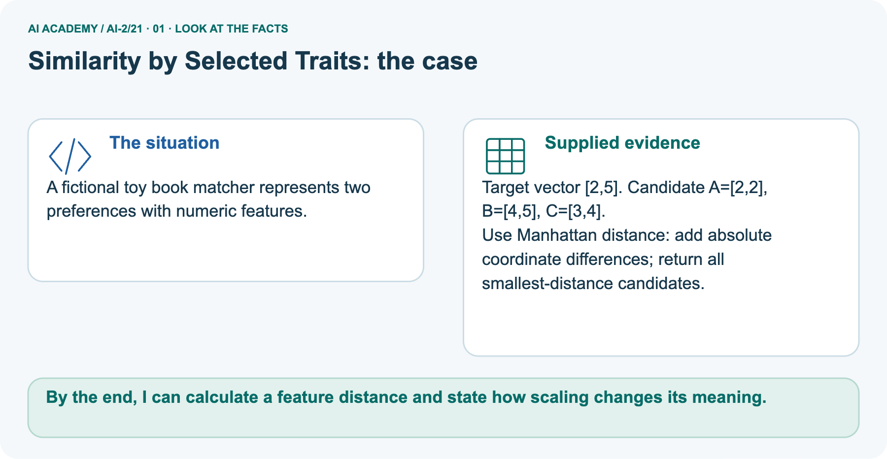
A fictional toy book matcher represents two preferences with numeric features. Supplied facts: Target vector [2,5]. Candidate A=[2,2], B=[4,5], C=[3,4].
Use Manhattan distance: add absolute coordinate differences; return all smallest-distance candidates.
Point to the given fact that matters most. Explain why it matters.
02. Follow the deciding steps
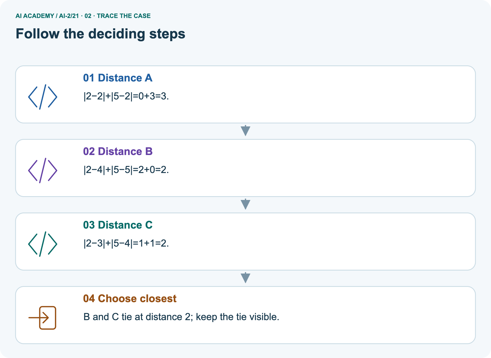
Distance A: |2−2|+|5−2|=0+3=3. → Distance B: |2−4|+|5−5|=2+0=2. → Distance C: |2−3|+|5−4|=1+1=2. → Choose closest: B and C tie at distance 2; keep the tie visible.
Point to each numbered stage and explain which recorded input it uses.
03. Toy feature positions
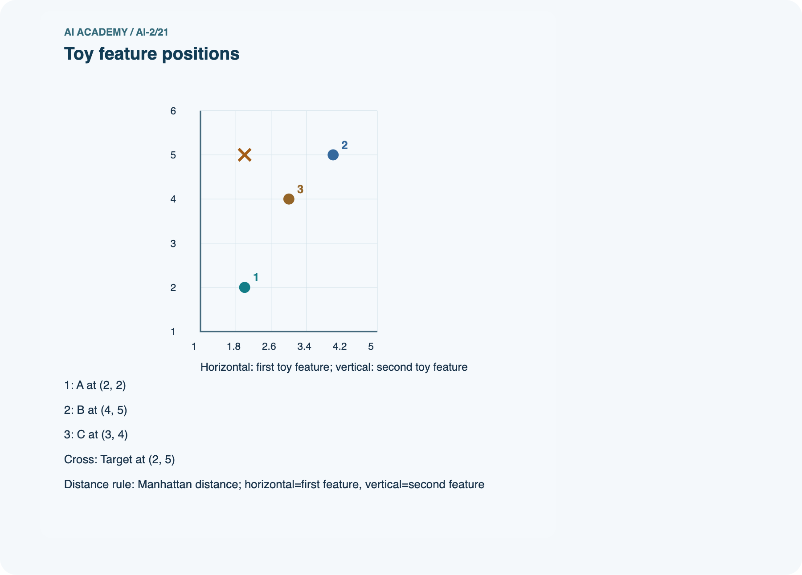
Toy feature positions. A: (2, 2). B: (4, 5). C: (3, 4). Query Target: (2, 5). Axes: first toy feature; second toy feature. Distance: Manhattan distance; horizontal=first feature, vertical=second feature.
Read the labels and values. Explain the relationship the model shows.
04. Change one thing. Trace what follows.
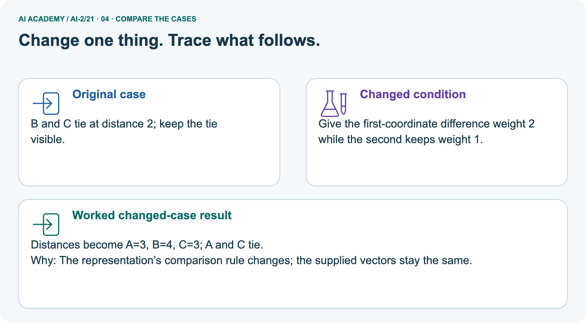
Original case: B and C tie at distance 2; keep the tie visible. Changed condition: Give the first-coordinate difference weight 2 while the second keeps weight 1. Expected result: Distances become A=3, B=4, C=3; A and C tie.
Reason: The representation’s comparison rule changes; the supplied vectors stay the same.
Predict before checking the worked changed-case result. Name what changed and what the supplied facts allow you to conclude.
05. Connect the explanation to its limit
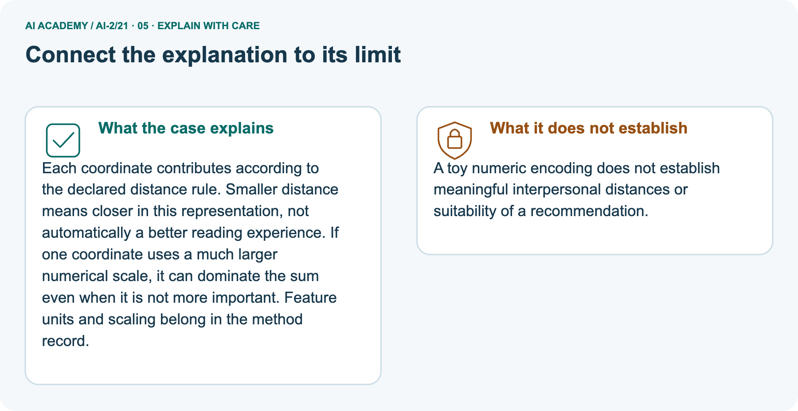
Each coordinate contributes according to the declared distance rule. Smaller distance means closer in this representation, not automatically a better reading experience.
If one coordinate uses a much larger numerical scale, it can dominate the sum even when it is not more important. Feature units and scaling belong in the method record.
Limit: A toy numeric encoding does not establish meaningful interpersonal distances or suitability of a recommendation.
Explain the case, then point to a limit on the claim.
06. Make the idea visible in your project
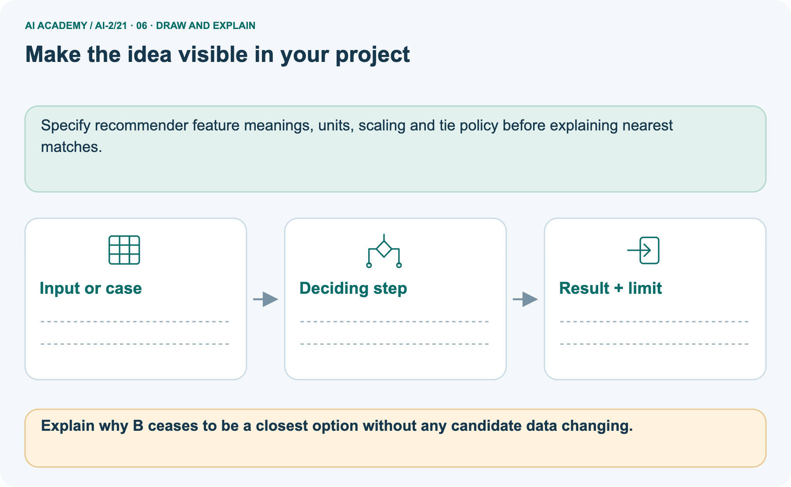
Specify recommender feature meanings, units, scaling and tie policy before explaining nearest matches. Draw your input, deciding step, result and limit.
Supported question: Explain why B ceases to be a closest option without any candidate data changing.
Draw your project trace and justify the deciding step using evidence.